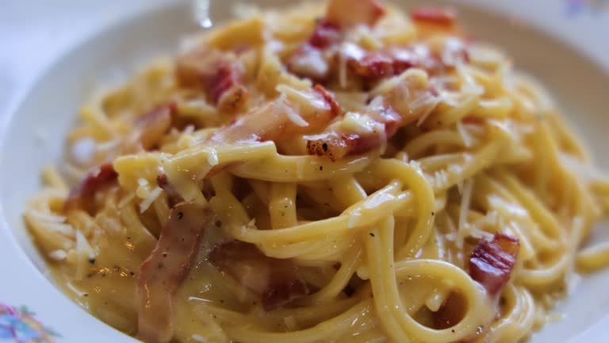

Carbonara

Description
This recipe is one of the most popular classical italian pasta to make
wherever you are, because of its simplicity and tastyness.
Ingredients
For 2 people
- 100g of guanciale
- 2 eggs
- 200g of spaghetti
- 50g of pecorino or grana padano
- 10g of salt
- black pepper
Steps
- First of all we put water to heat up untill it boils.
- Meanwhile the water is heating up we cook the guanciale in a pan with medium heat untill it's crunchy.
- Once the water is boiling we put the pasta to cook following the instructions in it's packaging, with half a tablespoon of salt.
- We put the eggs and the grated cheese in a bowl and we mix it together with black pepper.
- The guanciale should be done by now, so we mix it's grease with the eggs, cheese and pepper (that's gonna give the dish a punch of flavor).
- When the pasta is cooked we separate it from the water and we add it to the bowl while it's still hot, mixing it for a while untill it's integrated with the sauce.
- With all these ingredients mixed up it's time to put them in the plate and add some cheese and the guanciale on top to finish with our recipe.